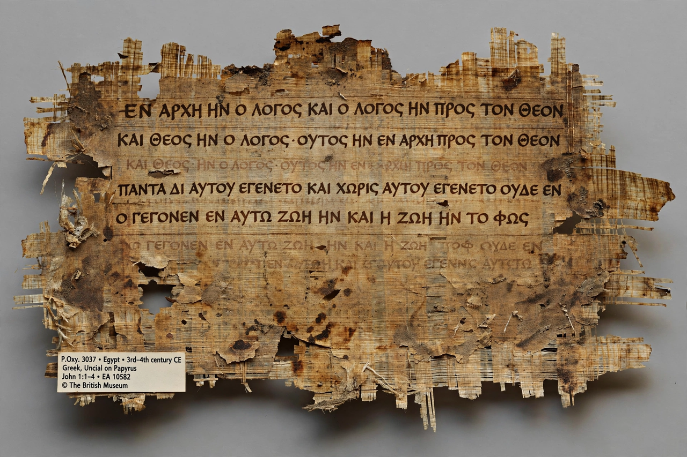

From Wikipedia, the free encyclopedia

The New Testament (NT) is the second division of the Christian biblical canon, written in Koine Greek and consisting of 27 books. It is a collection of Christian texts originally written in the first century AD, discussing the teachings and person of Jesus, as well as events relating to first-century Christianity. The New Testament's background, the first division of the Christian Bible, is called the Old Testament, which is based primarily upon the Hebrew Bible.
The 27 books are conventionally grouped as follows. The four canonical Gospels — Matthew, Mark, Luke and John — narrate the life, ministry, death and resurrection of Jesus, Mark generally being considered the earliest (c. AD 65–70). The Acts of the Apostles, by the author of Luke, recounts the spread of the early church from Jerusalem. The Pauline epistles are thirteen letters attributed to Paul the Apostle addressed to churches and individuals (Romans through Philemon), plus the anonymous Letter to the Hebrews, traditionally grouped with them. The General (Catholic) epistles comprise James, 1 and 2 Peter, 1, 2 and 3 John, and Jude. The canon closes with the Book of Revelation, an apocalyptic prophecy attributed to John of Patmos.
The canon developed over several centuries; Athanasius of Alexandria's festal letter of AD 367 is the earliest surviving list naming exactly the 27 books, and the list was widely ratified by regional councils. The New Testament survives in more Greek manuscripts — over 5,800 catalogued — than any other ancient work; the earliest fragment, Papyrus 𝔓52, a scrap of John's Gospel, dates to the second century. Differences among manuscripts give rise to the discipline of textual criticism, which seeks to reconstruct the earliest text.
Central themes include the proclamation of Jesus as Messiah and Son of God, salvation through his death and resurrection, the formation of the church, ethics of the Kingdom of God, and expectation of Christ's return. The New Testament, translated into more languages than any other book, has profoundly shaped Western and global law, ethics, art, literature and music over two millennia.
See also: Bible · Gospel · Paul the Apostle · Early Christianity